Marc Leguay
The Painter of Laos
Marcel-Louis Leguay was born in the year 1910 in Charleville, a city from Ardennes, France. After the secondary studies at Evreux high school, Marcel-Louis Leguay is accepted for the baccalaureate. Then he accepts a position as secretary of the civil state that the city hall proposes for him. He resigns quickly, finding the work too monotone, and leaves for France roads, European Southern countries, and North Africa of the North. He carries colors, his box to drawings and his easel.
|
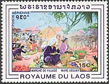 |
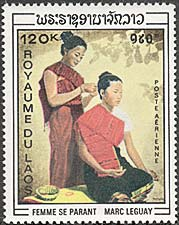 |
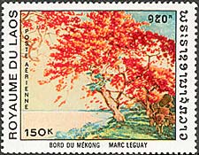 |
In 1931 Marcel-Louis Leguay lives in Perpignan, working for anybody who wishes to employ him. In 1936, replying to the invitation of the governor of Cochinchine, Marc Leguay embarks for the Indochina. He left waiting for him the boat destined to bring back home in 1937. Marc Leguay stops in the town of Sala, situated on the island of Som, near Laos and Cambodia. He finds there an atmosphere that inspires him, so he decides to install himself there.
|
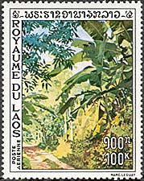 |
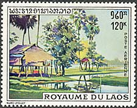 |
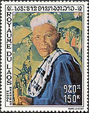 |
In
1947 Marc Leguay is persuaded by his Laotian friends to move his school of
applied arts from Khong to Vientiane. But this doesn't work by lack of money. At this point in time,
it is recruited as drawing professor to the high school, a profession that he will
exercise altogether during twenty-eight years.
It is in
1951 when Marc Leguay initiates a collaboration with the administration of the
Lao posts that will continue more than two decades, realizing
the drawing of many postal stamps.
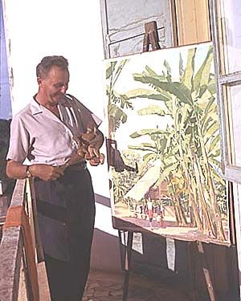 |
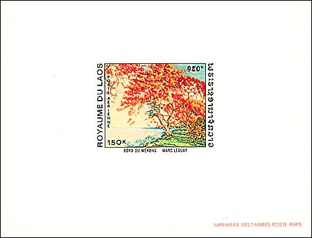 |
See above Marc Leguay on the balcony of his apartment in Vientiane (Laos), in 1964. Marc Leguay attains the summit of his art in 1974 thanks to the execution of four nude pictures.
|
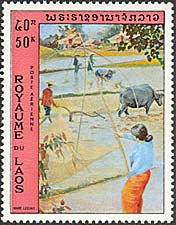 |
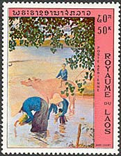 |
1976 Marc Leguay leaves Laos, as practically all westerners. Him and his companion of Thai origin will occupy the house-workshop that they have built in the natal town of the later.
|
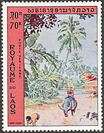 |
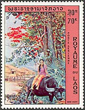 |
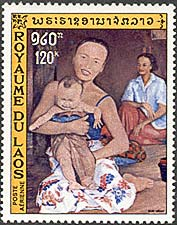 |
Marc Leguay died at Bane Kok Nong Seng in the year 2001. After: http://laposte.fr/musee/actu/mu_actu_dossier_marcleguay.htm
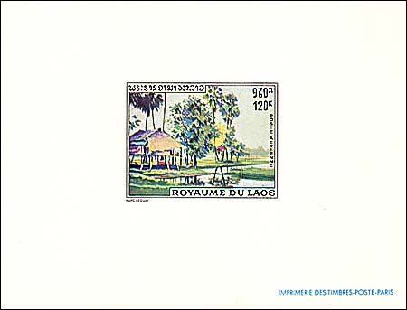
From 16th December 2002 to 22nd March 2003 the Postal Museum of France organizes, with the help of the international association of Laos stamp collectors, an exhibition commemorating the painter of Laos.
Please point on the stamps with the mouse index for more information about the works of art and the stamps.
Link: Hommage à Marc Leguay